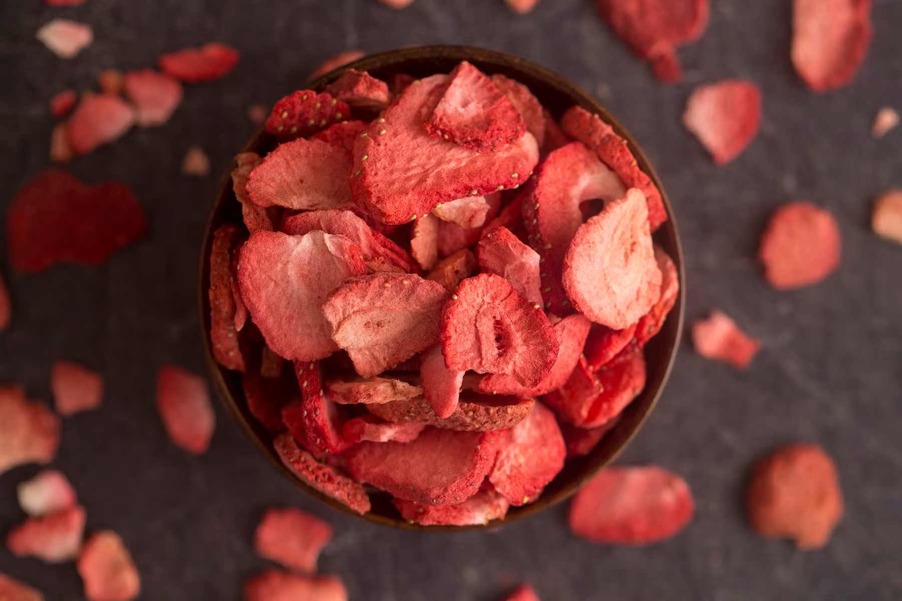
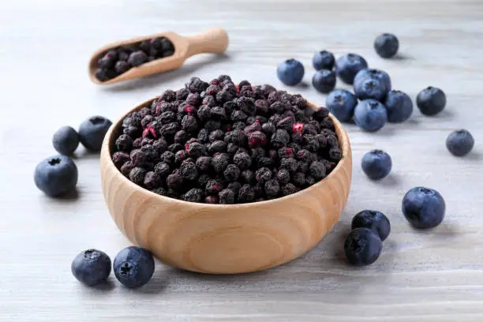

Fuerza y bienestar en cada bocado.
Descubre cómo una buena alimentación puede ayudarte a cuidar tu salud. En Kallpa creemos que aprender también es parte de alimentarse bien.
Explorar ↓¿Qué significa Kallpa?
Kallpa es una palabra de origen quechua que significa fuerza y energía. Elegimos este nombre porque representa el bienestar que una alimentación equilibrada puede aportar a las personas.
Nuestro snack
¿Qué contiene?

Mango deshidratado
- Fuente de vitamina A.
- Contiene vitamina C.
- Aporta fibra.

Fresa deshidratada
- Rica en vitamina C.
- Contiene antioxidantes.
- Aporta fibra.

Arándanos deshidratados
- Fuente de antioxidantes.
- Contienen fibra.
- Forman parte de una alimentación equilibrada.
Nuestro snack está elaborado con frutas deshidratadas cuidadosamente seleccionadas. Son una alternativa práctica para disfrutar fruta durante el día.
Pequeños hábitos, grandes cambios.
Comer variado
Tomar suficiente agua
Mantenerse activo
Dormir lo suficiente
Reducir el exceso de azúcar
Cuidar tu alimentación también es cuidar de ti.
¿Qué es la desnutrición?
La desnutrición ocurre cuando el cuerpo no recibe los nutrientes necesarios para crecer, tener energía y mantenerse saludable.
¿Qué es la mala alimentación?
Ocurre cuando no se consumen los nutrientes necesarios o se consumen en exceso alimentos poco nutritivos, lo que puede afectar la salud y el bienestar.
¿Qué son los trastornos alimenticios?
Son enfermedades que afectan la relación de una persona con la comida y requieren apoyo profesional para su tratamiento.
Mitos y verdades
Haz clic en cada afirmación para descubrir si es un mito o una verdad.
❌ Saltarse comidas ayuda a bajar de peso.
FALSO. El cuerpo necesita recibir energía y nutrientes de manera adecuada durante el día.
❌ Comer frutas en la noche hace daño.
FALSO. Las frutas pueden consumirse a cualquier hora como parte de una alimentación equilibrada.
❌ Todos los alimentos con azúcar son malos.
DEPENDE. Las frutas contienen azúcares naturales y también aportan vitaminas, minerales y fibra. Lo recomendable es limitar el exceso de azúcares añadidos.
❌ Las verduras solo sirven para bajar de peso.
FALSO. Las verduras aportan vitaminas, minerales y fibra que ayudan al buen funcionamiento del cuerpo.
❌ Si un alimento es saludable, puedo comer todo lo que quiera.
FALSO. Incluso los alimentos saludables deben consumirse en porciones adecuadas.
❌ Hacer ejercicio permite comer cualquier cantidad de comida.
FALSO. La actividad física es importante, pero también lo es mantener una alimentación equilibrada.
Pon a prueba tus conocimientos
¿Cuánto sabes sobre alimentación saludable?
Comenzar cuestionario¿Cómo funciona Kallpa?
El empaque de Kallpa incluye un código QR que dirige a esta página web. Así, cualquier persona puede acceder rápidamente a información sobre nutrición, alimentación saludable y bienestar desde su celular.
Un pequeño cambio puede hacer la diferencia.
Una buena alimentación no significa buscar la perfección, sino adquirir hábitos que contribuyan a una vida saludable. Cada pequeño cambio puede marcar una gran diferencia.